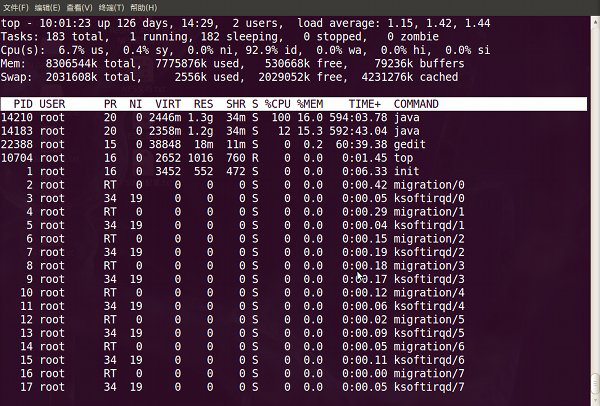

Linux学习之进程管理
了解ps，top,kill命令的使用
进程
进程分类
进程一般分为交互进程、批处理进程和守护进程三类。
值得一提的是守护进程总是活跃的，一般是后台运行，守护进程一般是由系统在开机时通过脚本自动激活启动或超级管理用户root来启动。比如在Redhat中，我们可以定义httpd 服务器的启动脚本的运行级别，此文件位于/etc/init.d目录下，文件名是httpd，/etc/init.d/httpd 就是httpd服务器的守护程序，当把它的运行级别设置为3和5时，当系统启动时，它会跟着启动。
1 | [root@localhost ~]# chkconfig --level 35 httpd on |
进程属性
进程ID（PID)：是唯一的数值，用来区分进程；
父进程和父进程的ID（PPID)；
启动进程的用户ID（UID）和所归属的组（GID）；
进程状态：状态分为运行R、休眠S、僵尸Z；
进程执行的优先级；
进程所连接的终端名；
进程资源占用：比如占用资源大小（内存、CPU占用量）；
父进程和子进程
他们的关系是管理和被管理的关系，当父进程终止时，子进程也随之而终止。但子进程终止，父进程并不一定终止。比如httpd服务器运行时，我们可以杀掉其子进程，父进程并不会因为子进程的终止而终止。
在进程管理中，当我们发现占用资源过多，或无法控制的进程时，应该杀死它，以保护系统的稳定安全运行；
进程管理
对于Linux进程的管理，是通过进程管理工具实现的，比如ps、kill、pgrep等工具；
ps
ps 提供了很多的选项参数，常用的有以下几个；
1 |
|
我们常用的选项是组合是aux 或lax，还有参数f的应用；
ps aux / ps lax输出的字段解释
1 |
|
实际应用
实例一：ps aux 最常用
1
2
3
4
5[root@localhost ~]# ps -aux | more
可以用 | 管道和 more 连接起来分页查看
[root@localhost ~]# ps -aux > ps001.txt
[root@localhost ~]# more ps001.txt
这里是把所有进程显示出来，并输出到ps001.txt文件，然后再通过more 来分页查看实例二：和grep 结合，提取指定程序的进程；
1
2
3
4
5
6
7
8
9
10
11[root@localhost ~]# ps aux | grep httpd
root 4187 0.0 1.3 24236 10272 ? Ss 11:55 0:00 /usr/sbin/httpd
apache 4189 0.0 0.6 24368 4940 ? S 11:55 0:00 /usr/sbin/httpd
apache 4190 0.0 0.6 24368 4932 ? S 11:55 0:00 /usr/sbin/httpd
apache 4191 0.0 0.6 24368 4932 ? S 11:55 0:00 /usr/sbin/httpd
apache 4192 0.0 0.6 24368 4932 ? S 11:55 0:00 /usr/sbin/httpd
apache 4193 0.0 0.6 24368 4932 ? S 11:55 0:00 /usr/sbin/httpd
apache 4194 0.0 0.6 24368 4932 ? S 11:55 0:00 /usr/sbin/httpd
apache 4195 0.0 0.6 24368 4932 ? S 11:55 0:00 /usr/sbin/httpd
apache 4196 0.0 0.6 24368 4932 ? S 11:55 0:00 /usr/sbin/httpd
root 4480 0.0 0.0 5160 708 pts/3 R+ 12:20 0:00 grep httpd实例二：父进和子进程的关系友好判断的例子
1 |
|
prep
pgrep 是通过程序的名字来查询进程的工具，一般是用来判断程序是否正在运行。在服务器的配置和管理中，这个工具常被应用，简单明了；
用法：1
#pgrep 参数选项 程序名
常用参数
-l 列出程序名和进程ID；
-o 进程起始的ID；
-n 进程终止的ID；
举例：1
2
3
4
5
6
7
8
9
10
11
12
13
14
15
16
17
18
19
20
21
22
23
24
25[root@localhost ~]# pgrep -lo httpd
4557 httpd
[root@localhost ~]# pgrep -ln httpd
566 httpd
[root@localhost ~]# pgrep -l httpd
4557 httpd
4560 httpd
4561 httpd
4562 httpd
4563 httpd
4564 httpd
4565 httpd
4566 httpd
[root@localhost ~]# pgrep httpd
4557
4560
4561
4562
4563
4564
4565
4566
终止进程
终止一个进程或终止一个正在运行的程序，一般是通过 kill 、killall、pkill、xkill 等进行。比如一个程序已经死掉，但又不能退出，这时就应该考虑应用这些工具。
kill
1 | kill的应用是和ps 或pgrep 命令结合在一起使用的； |
killall
killall 通过程序的名字，直接杀死所有进程，咱们简单说一下就行了。
用法：killall 正在运行的程序名
killall 也和ps或pgrep 结合使用，比较方便；通过ps或pgrep 来查看哪些程序在运行；
举例：1
2
3[root@localhost beinan]# pgrep -l gaim
2979 gaim
[root@localhost beinan]# killall gaim
pkill
pkill 和killall 应用方法差不多，也是直接杀死运行中的程序；如果您想杀掉单个进程，请用kill 来杀掉。
应用方法：
#pkill 正在运行的程序名
举例：1
2
3
4
5
[root@localhost beinan]# pgrep -l gaim
2979 gaim
[root@localhost beinan]# pkill gaim
top 监视系统任务的工具
和ps 相比，top是动态监视系统任务的工具，top 输出的结果是连续的；
top 命令用法及参数；
top 调用方法：
top 选择参数
参数：1
2
3
4
5
6
7
8
9-b 以批量模式运行，但不能接受命令行输入；
-c 显示命令行，而不仅仅是命令名；
-d N 显示两次刷新时间的间隔，比如 -d 5，表示两次刷新间隔为5秒；
-i 禁止显示空闲进程或僵尸进程；
-n NUM 显示更新次数，然后退出。比如 -n 5，表示top更新5次数据就退出；
-p PID 仅监视指定进程的ID；PID是一个数值；
-q 不经任何延时就刷新；
-s 安全模式运行，禁用一些效互指令；
-S 累积模式，输出每个进程的总的CPU时间，包括已死的子进程；
交互式命令键位：1
2
3
4
5
6
7
8
9
10
11
12
13
14
15
16
17
18
19
20space 立即更新；
c 切换到命令名显示，或显示整个命令（包括参数）；
f,F 增加显示字段，或删除显示字段；
h,? 显示有关安全模式及累积模式的帮助信息；
k 提示输入要杀死的进程ID，目的是用来杀死该进程（默人信号为15）
i 禁止空闲进程和僵尸进程；
l 切换到显法负载平均值和正常运行的时间等信息；
m 切换到内存信息，并以内存占用大小排序；
n 提示显示的进程数，比如输入3，就在整屏上显示3个进程；
o,O 改变显示字段的顺序；
r 把renice 应用到一个进程，提示输入PID和renice的值；
s 改变两次刷新时间间隔，以秒为单位；
t 切换到显示进程和CPU状态的信息；
A 按进程生命大小进行排序，最新进程显示在最前；
M 按内存占用大小排序，由大到小；
N 以进程ID大小排序，由大到小；
P 按CPU占用情况排序，由大到小
S 切换到累积时间模式；
T 按时间／累积时间对任务排序；
W 把当前的配置写到~/.toprc中；
top应用实例

第一行：
10:01:23 — 当前系统时间
126 days, 14:29 — 系统已经运行了126天14小时29分钟（在这期间没有重启过）
2 users — 当前有2个用户登录系统
load average: 1.15, 1.42, 1.44 — load average后面的三个数分别是1分钟、5分钟、15分钟的负载情况。
load average数据是每隔5秒钟检查一次活跃的进程数，然后按特定算法计算出的数值。如果这个数除以逻辑CPU的数量，结果高于5的时候就表明系统在超负荷运转了。第二行：
Tasks — 任务（进程），系统现在共有183个进程，其中处于运行中的有1个，182个在休眠（sleep），stoped状态的有0个，zombie状态（僵尸）的有0个。第三行：cpu状态
6.7% us — 用户空间占用CPU的百分比。
0.4% sy — 内核空间占用CPU的百分比。
0.0% ni — 改变过优先级的进程占用CPU的百分比
92.9% id — 空闲CPU百分比
0.0% wa — IO等待占用CPU的百分比
0.0% hi — 硬中断（Hardware IRQ）占用CPU的百分比
0.0% si — 软中断（Software Interrupts）占用CPU的百分比
在这里CPU的使用比率和windows概念不同，如果你不理解用户空间和内核空间，需要充充电了。第四行：内存状态
8306544k total — 物理内存总量（8GB）
7775876k used — 使用中的内存总量（7.7GB）
530668k free — 空闲内存总量（530M）
79236k buffers — 缓存的内存量 （79M）第五行：swap交换分区
2031608k total — 交换区总量（2GB）
2556k used — 使用的交换区总量（2.5M）
2029052k free — 空闲交换区总量（2GB）
4231276k cached — 缓冲的交换区总量（4GB）
这里要说明的是不能用windows的内存概念理解这些数据，如果按windows的方式此台服务器“危矣”：8G的内存总量只剩下530M的可用内存。Linux的内存管理有其特殊性，复杂点需要一本书来说明，这里只是简单说点和我们传统概念（windows）的不同。
第四行中使用中的内存总量（used）指的是现在系统内核控制的内存数，空闲内存总量（free）是内核还未纳入其管控范围的数量。纳入内核管理的内存不见得都在使用中，还包括过去使用过的现在可以被重复利用的内存，内核并不把这些可被重新使用的内存交还到free中去，因此在linux上free内存会越来越少，但不用为此担心。
如果出于习惯去计算可用内存数，这里有个近似的计算公式：第四行的free + 第四行的buffers + 第五行的cached，按这个公式此台服务器的可用内存：530668+79236+4231276 = 4.7GB。
对于内存监控，在top里我们要时刻监控第五行swap交换分区的used，如果这个数值在不断的变化，说明内核在不断进行内存和swap的数据交换，这是真正的内存不够用了。第六行是空行
第七行以下：各进程（任务）的状态监控
1
2
3
4
5
6
7
8
9
10
11
12PID — 进程id
USER — 进程所有者
PR — 进程优先级
NI — nice值。负值表示高优先级，正值表示低优先级
VIRT — 进程使用的虚拟内存总量，单位kb。VIRT=SWAP+RES
RES — 进程使用的、未被换出的物理内存大小，单位kb。RES=CODE+DATA
SHR — 共享内存大小，单位kb
S — 进程状态。D=不可中断的睡眠状态 R=运行 S=睡眠 T=跟踪/停止 Z=僵尸进程
%CPU — 上次更新到现在的CPU时间占用百分比
%MEM — 进程使用的物理内存百分比
TIME+ — 进程使用的CPU时间总计，单位1/100秒
COMMAND — 进程名称（命令名/命令行）